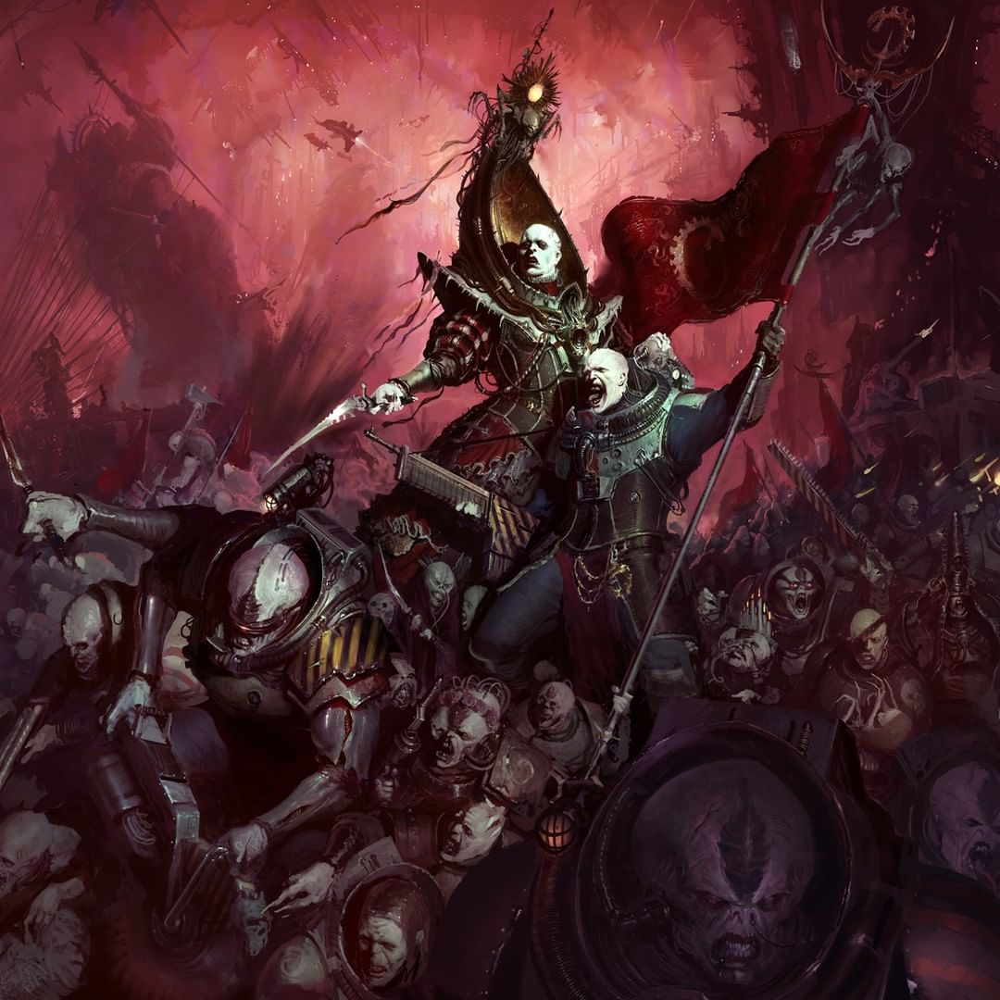

Xenos
Overview
The Xenos are the alien races that aren't human, except for one. They range from being around since the beginning of time to being quite recent, to not even being from our galaxy. It is a wide range and each have their own uniqueness to them and histories. For the sake of briefness, their histories won't be explored but only in short.
Aeldari

Aeldari are space elves, having been around since life began in the galaxy. With advanced technology, their race was almost destroyed. In short, the Aeldari in their height performed apocalyptic debauchery that grew within the warp, birthing Slaanesh who killed 99% of their entire race, and when they die their souls are eaten by Slaanesh. These Aeldari are what are called the craftworld aeldari, a group that left the main populace before Slaanesh's brirth, desiring to make their race better. Their technology is immensly advanced, their agility and skills unmatched.
Drukhari

The Drukhari are Aeldari who survived Slaanesh's birth by being within a pocket dimension known as the webway. These space elves are the dark Aeldari, as Slaanesh is trying to eat their souls, they found if they inflict pain and unimaginable torture on others will stave off Slaanesh so long as they keep doing it. They are the darkest and most depraved faction within Warhammer 40K.
Necrons

Necrons are a race that originally were flesh and blood but made a deal with trickster star gods known as the C'tan who put their consciousses into undying robots and ate their souls. They are heavily egyptian themed, able to regenerate and with weaponry so advanced that they literally disintegrate their enemies and can blow up entire suns in the galaxy with a push of a button. Most of the population are slaves, their leaders the only ones who can act freely, thus leading them to conquer the galaxy and take whats theres.
Tyranids

The Tyranids are a hive mind species from outside our galaxy, able to adapt and evolve in mere seconds and with an unending hunger. They feast on all biomass and recycle it to create more tyranids, considered the second most dangerous faction in lore.
Genestealer Cult
Genestealer cults are created from a tyranid known as a genestealer, who splices dna into people, mainly humans, which breed and create mutant tyranid offspring. They belief the tyranids are their gods and wait the day of ascension to clear the path for their Tyranid gods.
Orks

Orks are the goffiest faction, with the power to make whatever they belief a reality, they love a good fight. They are half fungus and half animal, incredibly strong and simply desire to fight and kill.
Tau Empire

The tau are a relativily new species who believe in the greater good, with advanced technology focusing on massive mechs.